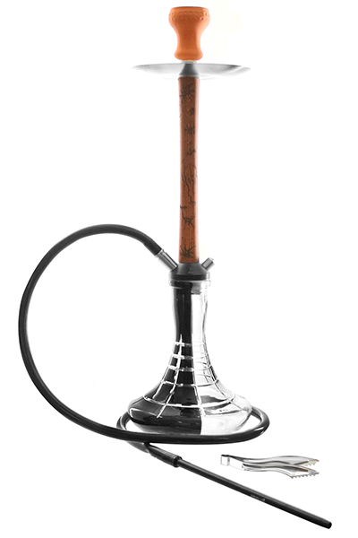
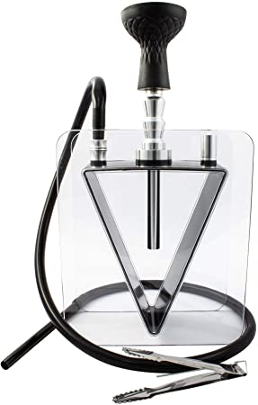
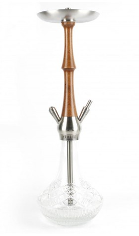
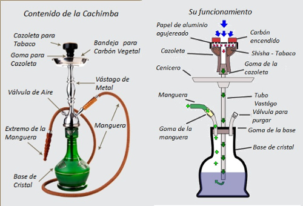

CACHIMBAS
La idea principal de la cachimba, shisha, hookah o narguile (recibe estos nombres en función del país donde se utilice) era la de encontrar un sistema que “limpiase” el humo, y “purificarlo o sanarlo” mediante un “filtrado” a través del agua.
  Debido a la prohibición a la hora de consumir alcohol en los establecimientos en los países árabes, las shishas se convirtieron en el producto estrella durante los momentos de ocio de la comunidad árabe.
Si nos paramos a pensar, al igual que en España quedamos un sábado para ir a tomar una copa a un pub, o una cafetería, en estos países es habitual encontrar a la gente reunirse para tomar un té y fumar hookah
El funcionamiento de una shisha es muy sencillo, se echa agua en la base para filtrar el humo, ponemos tabaco en la cazoleta de barro y mediante los carbones calentamos dicha cazoleta de barro para de esa forma cocer el tabaco que posteriormente fumaremos.
